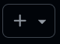

Ejercicios — Tema 1
Ejercicio 1.1
El objetivo de este ejercicio es que el estudiante cree su propia cuenta en GitHub y complete el proceso de solicitud del GitHub Student Developer Pack. El GitHub Student Developer Pack ofrece acceso gratuito a herramientas profesionales de desarrollo: dominios, servidores, IDEs, créditos en la nube, herramientas de diseño, bases de datos y mucho más.
A continuación las instrucciones, paso a paso, que debes seguir para completar este ejercicio.
1. Crear una cuenta en GitHub
Paso 1: Entra en: https://github.com/
Paso 2: Iniciar el registro. Haz clic en Sign up (arriba a la derecha).
Paso 3: Introducir tus datos. GitHub te pedirá:
- Correo electrónico (usa tu correo universitario de la UIB).
- Contraseña segura.
- Nombre de usuario (será tu identidad pública en GitHub).
Paso 4: Verificar tu correo. GitHub enviará un mensaje a tu email de la UIB. Abre el correo y pulsa Verify email address.
2. Completar tu perfil
Una vez creada la cuenta, completa tu perfil de usuario siguiendo estos pasos:
Paso 1: Accede a tu perfil. Haz clic en tu foto o avatar (arriba a la derecha) y selecciona Your profile.
Paso 2: Haz clic en Edit profile y completa la información solicitada:
- Name → Tu nombre real.
- Bio → Una breve descripción (por ejemplo: Estudiante del Grado en Matemáticas (UIB)).
- Company → Aquí es donde se indica la Universidad. Ejemplo:
Universitat de les Illes Balears
Paso 3: Guardar los cambios haciendo clic en Save al final del formulario.
Tras completar estos pasos, tendrás un perfil académico básico y correcto, adecuado para solicitar el GitHub Student Developer Pack
3. Activar la autenticación en dos pasos (2FA)
Paso 1: Accede a la configuración de tu cuenta. Haz clic en tu foto o avatar (arriba a la derecha) y selecciona Settings.
Paso 2: En el menú lateral izquierdo, abrir la sección Password and authentication.
Paso 3: Dentro de Password and authentication, localizar el apartado Two-factor authentication → Enable two-factor authentication
Paso 4: Elegir el método de autenticación.
- Se recomienda emplear una aplicación de autenticación (Authenticator app).
- Dado que la UIB requiere la aplicación Microsoft Authenticator se sugiere utilizar esta.
- Debes:
- Abrir la aplicación Microsoft Authenticator en tu móvil.
- Escanear el código QR que aparece en pantalla.
- Tocar el ícono de GitHub en la app (en tu móvil) para ver el código temporal de 6 dígitos que se genera cada 30 segundos.
- Introducir el código temporal anterior en la página de GitHub.
4. Reportar la cuenta de GitHub en el Aula Digital
5. Solicitar el GitHub Student Developer Pack
Paso 1: Ve a https://education.github.com/pack. Haz clic en Sign up for Student Developer Pack.
Paso 2: Iniciar sesión con tu cuenta de GitHub. Si no lo has hecho ya, GitHub te pedirá iniciar sesión.
Paso 3: Verificación de identidad académica. GitHub te pedirá demostrar que eres estudiante. Puedes hacerlo de dos formas pero se recomienda la opción de correo institucional (el que es xxxxx@estudiant.uib.cat)
Paso 4: Completar el formulario. GitHub te preguntará:
- Tu nivel educativo (Undergraduate)
- Tu universidad
- Tu motivo para solicitar el Pack (puedes escribir algo sencillo como: “I want to use professional development tools for my university degree programming projects.”)
Paso 5: Enviar la solicitud. Clic en Submit.
GitHub suele tardar entre 1 y 5 días en revisar la solicitud. Recibirás un correo indicando si ha sido aprobada. Una vez aceptado, tendrás acceso a todas las herramientas del Pack desde tu cuenta de GitHub.
Ejercicio 1.2
Este ejercicio tiene como objetivo que aprendas a:
- Crear un repositorio en GitHub.
- Configurarlo mínimamente.
- Levantar un Codespace asociado a ese repositorio.
1. Acceder a tu cuenta de GitHub (si no lo has hecho ya)
- Abrir el navegador.
- Ir a:
https://github.com/
- Pulsar Sign in.
- Introducir usuario y contraseña.
2. Crear el repositorio “test-de-codespaces–tema-1”
Paso 1: En la parte superior izquierda, hacer clic en
+(
).Paso 2: Seleccionar New repository.
Paso 3: Aparecerá un formulario con varios campos para configurar el repositorio:
- Repository name →
test-de-codespaces–tema-1 - Description →
Repositorio de prueba para Codespaces - Visibility →
Private(privado) - Initialize this repository with a README → marcar esta opción a On.
- Repository name →
Paso 4: Hacer clic en el botón Create repository.
Paso 5: Verificar que el repositorio se ha creado. Debes ver una página con:
- El nombre del repositorio que has dado arriba.
- Un archivo
README.mdya creado.
- Un menú con pestañas como Code, Issues, Pull requests, etc.
- El nombre del repositorio que has dado arriba.
3. Crear un Codespace preconfigurado para Python
Paso 1: Crear la carpeta
.devcontainery el ficherodevcontainer.jsonEn el repositorio creado (
test-de-codespaces–tema-1), hacer clic en el botón Add file → Create new file.En el campo Name your file escribir:
.devcontainer/devcontainer.jsonDentro del archivo, pega este contenido:
{ "name": "Curso Programación 23200, Python 3.12", "image": "mcr.microsoft.com/devcontainers/python:3.12", "customizations": { "vscode": { "extensions": [ "ms-python.python", "ms-python.vscode-pylance", "charliermarsh.ruff", "ms-python.black-formatter", "oderwat.indent-rainbow" ], "settings": { "editor.formatOnSave": true, "editor.defaultFormatter": "ms-python.black-formatter", "python.analysis.typeCheckingMode": "basic", "ruff.enable": true } } }, "postCreateCommand": "pip install --upgrade pip && pip install -r requirements.txt || true", "postStartCommand": "echo 'Entorno listo para Programación 23200'", "forwardPorts": [8000, 8080] }Guardar el archivo: Has clic en Commit changes….
Acepta el mensaje por defecto sobre los cambios y haz clic en Commit changes.
Paso 2: Crear el fichero
requirements.txten el directorio raíz del repositorioDado el paso anterior puede ocurrir que te encuentres en el directorio
.devcontainer, debes ir al directorio raíz del repositorio, no permanecer dentro de.devcontainer. Para ello haz clic en..(arriba a la izquierda) para volver al directorio raíz.En el directorio raíz del repositorio (
test-de-codespaces–tema-1), hacer clic en el botón Add file → Create new file.En el campo Name your file escribir:
requirements.txtDentro del archivo, pega este contenido:
ruff blackGuardar el archivo: Has clic en Commit changes….
Acepta el mensaje por defecto sobre los cambios y haz clic en Commit changes.
4. Arrancar el Codespace
Paso 1: Has clic en Code → Codespaces.
Paso 2: Has clic en Create codespace on main.
GitHub detectará el
.devcontainery:- descargará la imagen de Python,
- instalará las extensiones,
- configurará el entorno,
- abrirá VS Code con soporte completo para Python.
- descargará la imagen de Python,
Paso 3: Espera a que el Codespace esté listo. Esto puede tardar unos minutos. Verás mensajes como:
- Setting up remote connection: [Building codespace…]”
- Installing dependencies…
Una vez listo, verás un mensaje en la parte inferior derecha de VS Code indicando que el entorno está listo.
- Setting up remote connection: [Building codespace…]”
5. Reconocer la interfaz del Codespace
El entorno tendrá:
Barra lateral izquierda con:
- Explorador, muestra los archivos del proyecto.
- Buscar, permite buscar texto en los archivos.
- Control de código fuente, permite ver los cambios y hacer commits.
- Ejecución y depuración, permite ejecutar y depurar el código.
- Extensiones, permite gestionar las extensiones de VS Code.
Editor de código en el centro arriba (aparece abierto el README.md).
Terminal integrada en el centro abajo.
Barra lateral derecha para el CHAT con Copilot.
6. Verificar que Python está configurado
En la TERMINAL del Codespace escribe el siguiente comando para comprobar la versión de Python instalada (si copias y pegas el comando, probablemente debas dar permiso en la ventana emergente del navegador para poder pegar texto en la terminal):
python --versionDebe aparecer:
Python 3.12.x7. Crear un archivo de prueba y ejecutarlo
En el explorador, pulsar New File o Nuevo archivo.
Nombrarlo:
prueba.pyEscribir dentro:
print("Mi primer Codespace funciona correctamente")Guardar (
Ctrl + S).Ejecutar el archivo.
- Variante 1: Escribir en la terminal:
python prueba.py- Variante 2: Hacer clic en Ejecutar archivo de Python (triángulo de play arriba a la derecha del editor de código).
8. Cerrar el Codespace
Este es un paso sumamente importante. Cuando termines de trabajar en el Codespace, debes cerrarlo para liberar recursos y evitar que se acumulen cargos en tu cuenta de GitHub. Principalmente ya que el número de horas de Codespaces gratuitas es limitado.
Sin salir del Codespace:
- Presiona
Ctrl + Shift + P(oCmd + Shift + Pen Mac) para abrir la paleta de comandos. - Escribe
Codespaces: Close Codespacey selecciona la opción que aparece.
- Presiona
Alternativamente, puedes cerrar el Codespace desde tu sitio de GitHub:
- Ve a tu repositorio en GitHub.
- Haz clic en Code → Codespaces.
- Localiza el Codespace que quieres cerrar y haz clic en … → Stop Codespace.